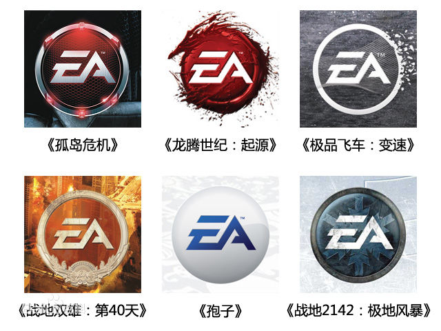

EA发展
极品飞车

美国艺电公司
美国艺电公司（Electronic Arts，NASDAQ: ERTS，简称EA），是全球著名的互动娱乐软件公司，主要经营各种电子游戏的开发、出版以及销售业务。美国艺电创建于1982年，总部位于美国加利福尼亚州红木城。截至2009年，美国艺电在美国其它城市、加拿大、英国、澳大利亚、台湾、香港等多个国家和地区均设有分公司或子公司，世界各地的雇员总数达7320人。
“EAGames”是美国艺电最主要的品牌。该品牌旗下主要有动作类、角色扮演类、赛车类、格斗类游戏。除了传统盒装零售的单机游戏，EA Games还出品了一些大型多人在线网络游戏（MMO）。该品牌负责人是弗兰克·吉伯（Frank Gibeau）。
游戏
在20世纪80年代，美国艺电几乎把全部注意力放在个人电脑游戏的发行上。此时，竞争对手任天堂却通过自己的努力逐步将电视游戏拉回市场正轨。1989年，任天堂的销售达到了20亿美元。在其他公司也对电视游戏虎视眈眈的情形下，美国艺电不得不着手对电视游戏市场进行准备。
1989年底，世嘉带着16位的Mega Drive来到了美国。
1989年秋，美国艺电凭借初发行的股票得到的资本，进入了电视游戏发行业。
1990年，大量的游戏如潮水般涌现，包括了从Amiga上移植的《Populous》、《Budokan: The Martial Spirit》、《John Madden Football》。在Mega Drive六年的生命期中，美国艺电建立了《Strike》、《NHL Hockey》、《NBA Live》、《FIFA Soccer》、《Road Rash》等相当多的品牌系列。
1999年世嘉带来了DC，开始了第六代游戏机转型过程。
极品飞车
《极品飞车》（Need for Speed）是由美国艺电游戏公司出品研发的一款赛车类游戏，于1994年发行，为《极品飞车》的初代产品。，其续作有从1995年至2012年已经出品了13代共17个作品。
游戏试图在爽快的赛车比赛和车辆的拟真上找到平衡点。这款游戏在世界车迷心目中占有重要地位。
《极品飞车：宿敌（Need for Speed: Rivals）》由美国艺电公司（EA）新成立的Ghost Games联合Criterion Games所打造，采用先进的寒霜3游戏引擎，力图给玩家创建一个开放的、更具竞争性的赛车世界。
在这一代中，《极品飞车：宿敌》还融合了系列作品中的车辆升级系统和警匪追逐元素，拥有开放性的游戏世界，同时一成不变的是玩家也可以选择竞速者与在街道上警察展开角逐，而无论是警察一方还是竞速者一方，游戏都将提供给玩家独特的挑战目标，该作将围绕通缉车与警车这两个“宿敌”进行，同时引入战役合作模式和更好的多人模式。本作采用的是沙盒设定，能让玩家在被通缉的赛车和警车之间任意选择，同时还加入改装，可自定义轮胎，贴纸，引擎等。
?!?获取下载?!?